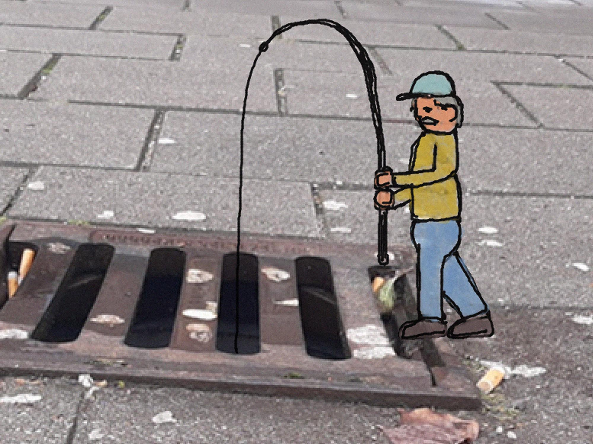
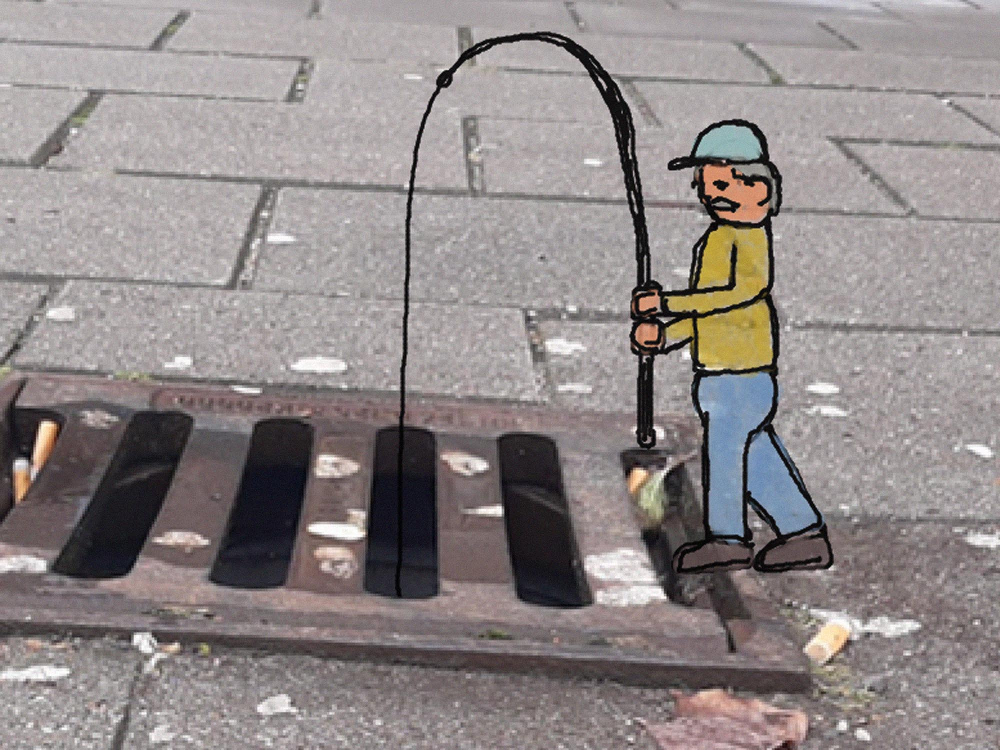

A Wall
Een initiatief om mensen hun eigendommen onbeklad te houden, een alternatief voor grafitti.
Deze app maakt een canvas van je camera/webcam. Hiermee kan je je omgeving versieren hoe jij wil zonder mensen hun eigendommen te vandaliseren.
 

Een initiatief om mensen hun eigendommen onbeklad te houden, een alternatief voor grafitti.
Deze app maakt een canvas van je camera/webcam. Hiermee kan je je omgeving versieren hoe jij wil zonder mensen hun eigendommen te vandaliseren.